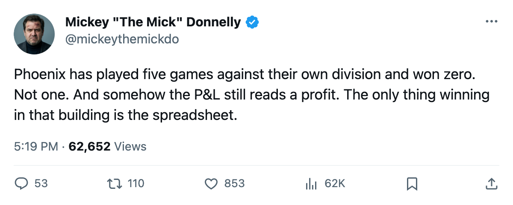
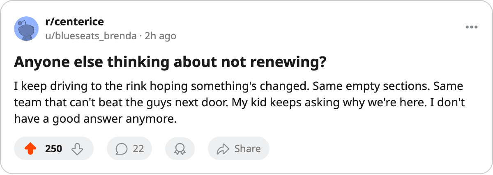

OWNED: PHOENIX HAVE NOT BEATEN ANYBODY IN THE PACIFIC. FIVE GAMES. FIVE LOSSES. $3.69M A POINT.
Zero wins in the division. Zero excuses left. And the desk got one wrong too.
 Mickey "The Mick" DonnellyColumnist, ex-goalie · The Penalty Box
Mickey "The Mick" DonnellyColumnist, ex-goalie · The Penalty Box
The  Phoenix Coyotes have played five games against their own division and lost every one. Dallas beat them three times. Anaheim and Los Angeles took the other two. Five regulation losses. Seven goals for, thirteen against. In the Pacific standings, Phoenix has zero wins. Not one.
Phoenix Coyotes have played five games against their own division and lost every one. Dallas beat them three times. Anaheim and Los Angeles took the other two. Five regulation losses. Seven goals for, thirteen against. In the Pacific standings, Phoenix has zero wins. Not one.
Tonight they visit  St. Louis Blues, which has won 8 straight and sits at 15-4-3. Phoenix is 5-16-1, last in the league, 3-11 on the road. The gap between these clubs is 20 points and growing by the week.
St. Louis Blues, which has won 8 straight and sits at 15-4-3. Phoenix is 5-16-1, last in the league, 3-11 on the road. The gap between these clubs is 20 points and growing by the week.
$3.69M a point is the most in hockey
Phoenix has $55.41M on the books and 15 points. That is $3.69M per point. Ottawa is next at $3.49M. Dallas is last at $1.61M. Dallas has $58.02M in payroll and 36 points, more than double Phoenix's production for $2.61M more. Dallas finishes first in the Pacific. Phoenix finishes last.
11,328 bodies at $82. The fewest anywhere.
Revenue is $35.86M, also the lowest. The ticket costs $82. The profit is $12.06M. Those numbers mean the front office books its revenue, pays its bills, and reports a healthy season while the hockey product wins 5 games out of 24. Nobody in that building has to feel anything. The profit tells them they don't.
The desk was wrong. The record agrees.
On November 17 this desk said Colorado would not win at Phoenix. Colorado won 4-1, a regulation loss worth zero points. The prediction was too generous to a team that cannot beat its own division, let alone a road club with a winning record. The product is worse than the desk believed.
The room is fine. That is the problem.
The Bureau's Morale Scale puts Phoenix at 90.7, roughly middle of the pack. One man sits on the Development Index fallers list: Billy Tibbetts60 [997], a 31-year-old at -4. No Phoenix player is mis-slotted. The lineup card is not broken. A 47-goal offense across 24 games is not a room problem. That is a payroll problem, and whoever approved the payroll owns it.
Dallas scored 7 goals in three meetings against Phoenix. Phoenix answered with 4. Anaheim and Los Angeles finished the divisional set. Five games. Five losses. Seven goals for, thirteen against. The next Pacific meeting is the sixth, and the only question is the score.

